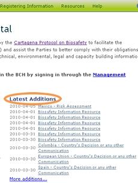
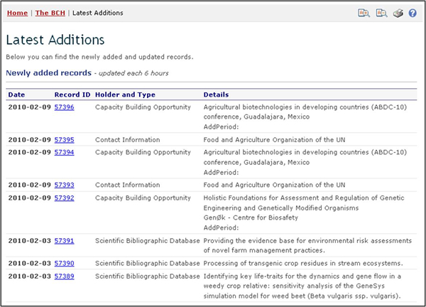

The most recent additions to the BCH databases are displayed on this list. The list is updated every six hours and the seven most recent entries show on the Home page. A complete list of BCH additions is available at https://bch.cbd.int/about/latestadditions.shtml and can be reached by following the link to More additions.

Figure 5
In many instances the Search results pages are longer than a standard computer screen and the user needs to scroll down the page to view all the items and links to additional search result pages where these exist.

Figure 6